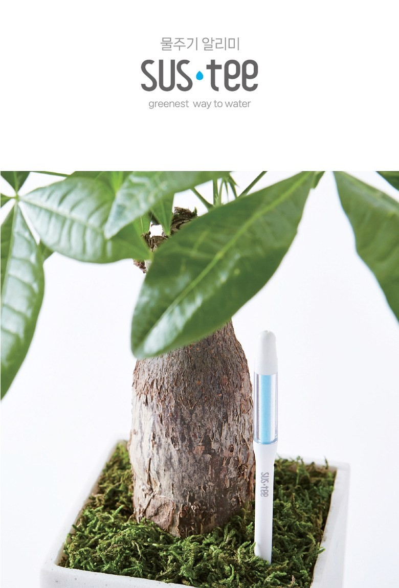
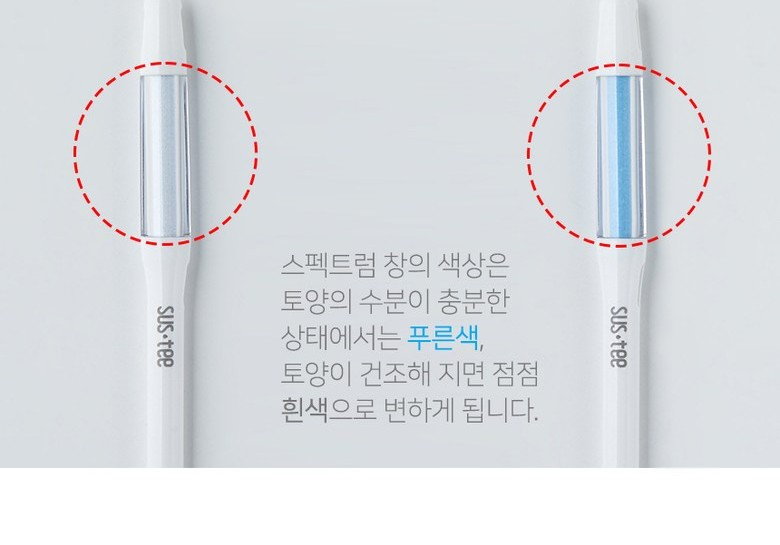
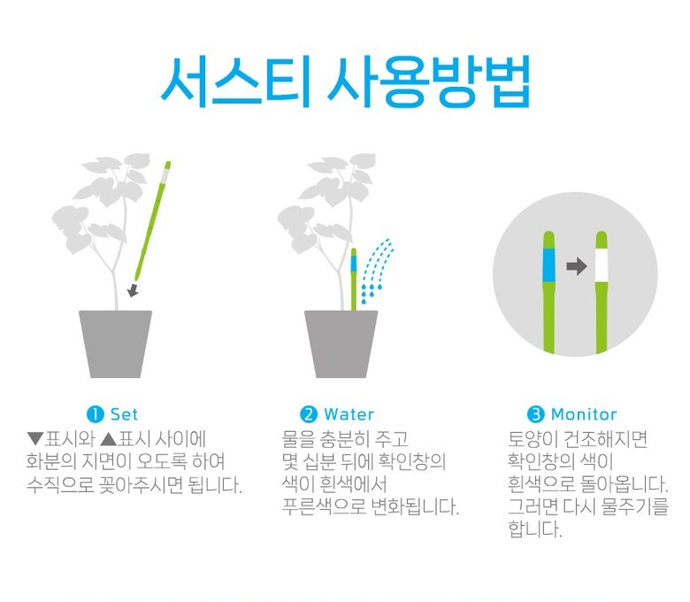

겉흙만 보고 물을 줬다면
“말라 보이니까” 준 물이 화분 바닥에 고여 있을 수 있어요. 속흙 신호를 함께 봐야 합니다.
물주기 알리미 SUSTEE
화분 속은 아직 젖어 있는데 물을 더 주는 순간, 뿌리는 숨을 쉬지 못합니다. SUSTEE는 흙 속 수분이 부족해진 때만 색으로 알려줘요.
이 페이지는 쿠팡 파트너스 활동의 일환으로, 이에 따른 일정액의 수수료를 제공받습니다.

왜 필요한가요
겉흙은 빨리 마르지만 뿌리 주변은 며칠 더 젖어 있을 수 있습니다. 그 차이를 모르고 물을 더 주면, 과습이 반복됩니다.
“말라 보이니까” 준 물이 화분 바닥에 고여 있을 수 있어요. 속흙 신호를 함께 봐야 합니다.
식물은 내 일정에 맞춰 마르지 않아요. 하얀 표시가 나왔을 때만 물을 주면 됩니다.
물 부족과 과습은 겉으로 비슷해 보입니다. 수분 상태부터 확인해야 엉뚱한 처방을 막을 수 있어요.
작동 방식
별도의 전원이나 앱 연결 없이 수분 변화에 따라 표시창의 색이 변합니다. 한 번 꽂아두면 확인은 아주 짧아집니다.

뿌리 가까운 위치에 설치해 수분 상태를 확인합니다.
파란색은 수분이 충분한 상태를 의미합니다.
하얗게 바뀌면 물을 줄 시점으로 확인할 수 있습니다.

구매 전 확인
오늘부터 더 쉽게
다음 물주기 전, 내 화분 크기에 맞는 SUSTEE 옵션부터 확인해 보세요.
SUSTEE 5개 세트 보러 가기 쿠팡 파트너스 활동의 일환으로 일정액의 수수료를 제공받을 수 있습니다.